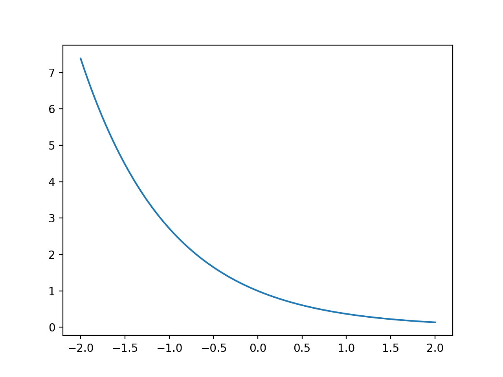
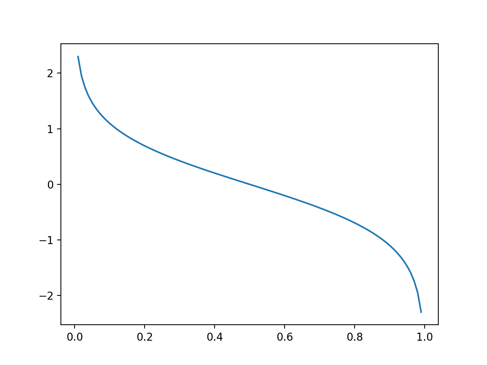

目的
本人面过腾讯和头条的算法岗，可能是因为我简历上写了：使用过adaboost算法模型，所以无论是一面还是二面都被面试官问到有关adaboost算法原理的相关问题，而且变态的头条面试官居然还问到：为什么增加弱分类器，模型的效果变好？我当时是被问得一脸懵逼，所以写下这篇blog来梳理adaboost的相关知识点，本篇blog主要围绕三个点展开：
- 以前向分布算法的角度理解adaboost
- 为什么增加基分类器模型的效果变好？
- 为什么我们要使用弱分类器作为基分类器而不是强分类器？
以前向分布算法的角度理解adaboost
通俗的adaboost
adaboost模型其实是非常强大的，在很多数据挖掘比赛上都会用来做stacking。而且本身的算法也是通俗易懂，主要包括两步：
- 改变数据分布：每次训练完一个基分类器后，提高分类错误点的权重，减少分类正确点的权重。
- 调整模型权重：分类正确率高的模型权重更高，分类错误率高的模型权重低。
然后，我们就会给出一系列计算数据权重的公式，以及计算模型权重的公式，但是这些公式太难记了，往往在面试中一紧张就会忘掉，而且对于程序员来说，记公式，low爆了，我们一系就不会，一系就从头手推adaboost，让面试官眼前一亮。
前向分步算法
现在一个非常常用的模型框架是加法模型，形如：
$$
f(x) = \sum_i^D w_ix_i
$$
我们的神经网络在用，logistic regression在用，svm也在用。那我们能不能用到集成学习中呢？我们将每一个分类器线性组合起来得到下面这样的模型：
$$
G(x) = \sum_i^m \alpha_i g_i(x) \tag{1}
$$
我们要得到一个很好的$G(x)$，得给它设置一个目标函数。我们的神经网络使用的是cross entropy，adaboost在这里使用了一个叫指数损失函数的目标函数：
$$
e^{-x}
$$

我们整个目标函数是（注意$y_i \in {-1, 1}$）：
$$
L(\alpha, G) = \sum_i^N e^{-y_iG(x_i)}
$$
我们先直观地感受一下这个目标函数，当$y_i = G(x_i)$比较多时，L的值慢慢减少，当分类器错误率高时，$y_iG(x_i) = 0$的值就多，L的值慢慢增大。但是我们发现优化这个公式太困难了，我们有一堆$\alpha$和一堆小$g$，所以我们使用加法模型中的特例，前向分步来计算：每次只优化新加进来的权重还有分类器：
$$
L(\alpha_m,g_m) = \sum_i^N e^{- y_i(G_{m-1}(x_i) + \alpha_mg_m(x_i))} \tag{2}
$$
令$e^{-y_iG_{m-1}(x_i)} = w_{m-1,i}$，这个在我们优化时是固定的，原式子等于：
$$
\begin{align}
L(\alpha_m, g_m) =& \sum_i^N w_{m-1,i}e^{-y_i\alpha_mg_m(x_i)}\\
=& \sum_{y_i = g_m(x_i)} w_{m-1,i} e^{\alpha_m} + \sum_{y_i \neq g_m(x_i)} w_{m-1,i} e^{-\alpha_m} \\
\end{align}
$$
以上这个式子不利于我们求导，我们使用指示函数$I$来简化我们的函数：
$$
L(\alpha_m, g_m) = e^{\alpha_m} \sum_i^N w_{m-1,i}I(y_i = g_m(x_i)) + e^{-\alpha_m} \sum_i^Nw_{m-1,i}I(y_i \neq g_m(x_i)) \tag{3}
$$
我们仔细观察（2）式子，不难发现是个单调函数，所以说如果求出该函数的极值点，则必为极大值或者极小值，对式子（3）求偏导数，且令其等于0：
$$
\begin{align}
0 =& e^{\alpha_m} \sum_i^N w_{m-1,i}I(y_i = g_m(x_i)) + e^{-\alpha_m} \sum_i^Nw_{m-1,i}I(y_i \neq g_m(x_i))\\
\alpha_m =& \frac{1}{2}ln \frac{\sum_i^N w_{m-1,i}I(y_i = g_m(x_i))}{\sum_i^Nw_{m-1,i}I(y_i \neq g_m(x_i))} \tag{4}
\end{align}
$$
令$e_{m} = \frac{\sum_i^Nw_{m-1,i}I(y_i \neq g_m(x_i))}{\sum_i^N w_{m-1,i}}$，我们称$e$为错误量，可以简化式子（4）：
$$
a_m = \frac{1}{2}ln\frac{1 - e_{m}}{e_{m}}
$$
我们直观地感受下$a_m$的变化，当错误量小于0.5，我们的模型起到比随机结果好的作用，那么权重就大于0，等于0.5相当于跟随机结果一样，权重为0:

在最后我们求出我们的最后的式子，其中$g_m$是我们的基分类器在第m轮训练出来的：
$$
G_m(x) = \sum_i^{m-1} \alpha_ig_i(x) + \alpha_mg_m(x) \tag{5}
$$
我们还可以训练得出新数据的权重分布：
$$
w_{m,i} = e^{-y_i G_m(x_i)}=e^{-y_iG_{m-1}(x_i)}e^{-y_i\alpha_mg_m(x_i)} = w_{m-1,i}e^{-y_i\alpha_mg_m(x_i)} \quad i=1…N \tag{6}
$$
由于前向分布算法跟adaboost具体的算法实现相差一个规范化因子$Z$，所以$W$的初始化一般为1.
为什么增加基分类器模型的效果变好？
我看了李航的解答，上面的推导我认为是错误的，所以在这里我给出我自己的想法。在这里，我们假设效果变好是指，训练准确率上升了也就是$\frac{1}{N} \sum_i^N I(y_i \neq G(x_i))$越少越好，那么这里就会涉及到一个问题，就是训练误差上界，如果误差的上界是随着基分类器的数量在减少，那么就可以说增加基分类器$G(x)$越来越好，下面开始开脑洞了：
$$
\begin{align}
\frac{1}{N} \sum_i^N I(y_i \neq G(x_i))
\leq& \frac{1}{N}\sum_i^N e^{-y_iG(x_i)}\\
=& \frac{1}{N}\sum_i^N \prod_{m=1}^M e^{-y_i \alpha_m g_m(x_i)}\\
=& \sum_i^N w_{1,i}\prod_{m=2}^M e^{-y_i\alpha_mg_m(x_i)} \quad \text{$w_0$的初始化为$\frac{1}{N}$, 且根据式子(6)}\\
=& \sum_i^N w_{M-1,i} e^{-y_i\alpha_Mg_M(x_i)} = J(\alpha_M)
\end{align}
$$
接下来，我们比较这样这样的式子，如果它小于1，那么就大功告成，其中分母是$G_{M-1}(x)$的误差上界：
$$
C(\alpha_M) = \frac{\sum_i^N w_{M-1,i} e^{-y_i\alpha_Mg_M(x_i)}}{\sum_i^Nw_{M-1,i}} \tag{7}
$$
我们看两个极值点：
- 当我们的分类器是随机的，即$\alpha_M = 0$，那么式子（7）为1
- 当我们的分类器是超强分类器，即$\alpha = +\inf$,那么式子（7）为0
看到这里是不是发现了什么，对如果我们的$J(\alpha_M)$是单调函数，或许式子（7）只有一个极值点，并且极值点的值在1~0之间，那么我们就可以认为式子（7）小于1且增加分类器能够使得训练误差上界变少，对(7)式子求偏导数，并令它等于0：
$$
\frac{\partial (7)}{\partial \alpha_M} = \frac{1}{\sum_i^Nw_{M-1,i}} [e^{\alpha_m} \sum_i^N w_{m-1,i}I(y_i = g_m(x_i)) + e^{-\alpha_m} \sum_i^Nw_{m-1,i}I(y_i \neq g_m(x_i))] = 0
$$
你会发现$\alpha_M$跟式子（4）是一样的，只有一个极值点，我们接下来把式子（4）代入式子（7）求得：
$$
\begin{align}
C(\alpha_M^*) =& \frac{2[\sum_i^N w_{M-1,i}I(y_i = g_M(x_i)) ]^{\frac{1}{2}}
[\sum_i^N w_{M-1,i}I(y_i \neq g_M(x_i)) ]^{\frac{1}{2}}
}{
\sum_i^N w_{M-1, i}
}\\
=& 2 \sqrt{\frac{\sum_i^N w_{M-1,i}I(y_i = g_M(x_i)) }{\sum_i^N w_{M-1, i}}} \sqrt{ \frac{\sum_i^N w_{M-1,i}I(y_i \neq g_M(x_i))}{\sum_i^N w_{M-1, i}} }\\
= & 2 \sqrt{1 - e_M} \sqrt{e_M} \tag{8}
\end{align}
$$
在这里$e_M$是我们的错误量，值得范围是0~1，代入求得式子(8)的最大值为1，这时我们的分类器的是随机分类器。但是我们假设我们的分类器是比随机好的，那么$C(\alpha_M^*) < 1$，所以说加入基分类器对于训练集来说效果是比没有加好的。
为什么我们要使用弱分类器作为基分类器而不是强分类器
这里的解释就没有那么数学了，我简单地说一下我的看法。实际上你也可以从实验看出来，使用浅层的决策树比使用很深的决策树效果好很多。当你使用一个很强的分类器，它在训练集上效果很好，那么分类器的权重就会很大，这样在决策的时候完全是这个分类器在起作用，很容易造成过拟合，这样在实际的测试上效果会变差，但是在训练集上的表现还是不错的。